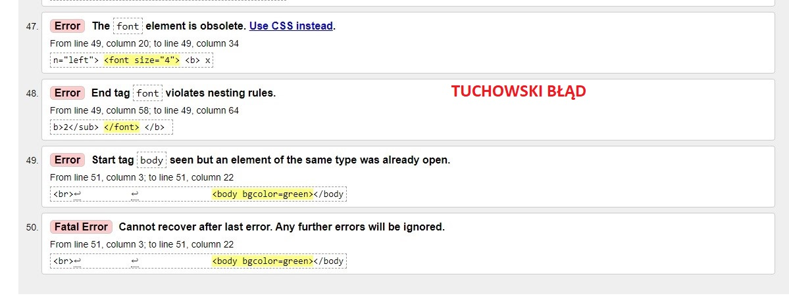

Walidacja - jest to proces sprawdzania strony internetowej za pomocą specjalnego programu lub innej strony internetowej pod kątem czy nie ma błędów składniowych. Stronę którą chcemy sprawdzić wgrywamy do specjalnej profesjonalnej strony, a strona ta poda gdzie mamy błędy oraz powody błędów.
